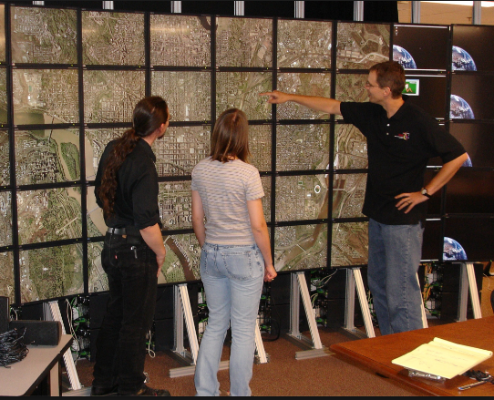
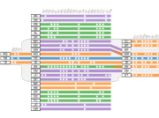
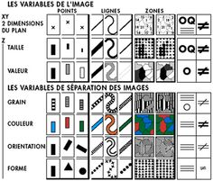

CSC2537/STA2555
Fall 2022
Information Visualization
Instructor : Carolina Nobre (Send Email)
Office hours by appointment
Class: Wednesdays, 2pm-4pm OI 4410 (OISE Building)
Purpose
 Visual perception...
Visual perception...
This course will study techniques and algorithms for creating effective visualizations based on principles from graphic design, visual art, perceptual psychology, and cognitive science. The course is targeted both towards students interested in using visualization in their own work, as well as students interested in building better visualization tools and systems. Students will conduct reading of scientific research papers. A final project will make‐up most of the grade (60%), while student presentation skills and in readings will also be emphasized.
... evaluation.
... applications
 ... visualization techniques
... visualization techniques
... data models
Course schedule
| Date | Topic | Readings / Assignments |
|---|---|---|
| 14 Sep. | L1: Introduction | (no readings) | 21 Sep. | L2: Paper Critique | Pre-class preparation: Readings will be posted on Quercus. |
| 28 Sep. | L3: Fundamentals of visualization | Low-Level Components of Analytic Activity in Information Visualization (Amar et al., 2005) The Eyes Have It A Task by Data Type Taxonomy for Information Visualization (Schneiderman, 1996) |
| 1 Oct. | ASSIGNMENT | Draw me a visualization... | 5 Oct. | L4: Visualization research | A Nested Model for Visualization Design and Validation (Munzner, 2009) Visualization as Seen Through its Research Paper Keywords (Isenberg et al., 2017) |
| 12 Oct. | L5: Exploratory Data Analysis | Voyager: Exploratory Analysis via Faceted Browsing of Visualization Recommendations (Wongsuphasawat et al., 2016) FlowSense: A Natural Language Interface for Visual Data Exploration within a Dataflow System (Yu and Silva, 2019) |
| 14 Oct. | PROJECT ASSIGNMENT | Project abstract due |
| 19 Oct. | L6: NO CLASS - Project Week | |
| 26 Oct. | L7: Visual Analytics | A Survey of Visual Analytics Techniques for Machine Learning (Yuan et al., 2020) There Is No Spoon: Evaluating Performance, Space Use, and Presence with Expert Domain Users... (Batch et al., 2020) |
| 2 Nov. | L8: Graphs & Networks | Juniper: A Tree+Table Approach to Multivariate Graph Visualization (Nobre et al., 2018) NodeTrix: A Hybrid Visualization of Social Networks (Henry et al., 2007) |
| 4 Nov. | PROJECT ASSIGNMENT | Project video due |
| 9 Nov. | READING WEEK: No class | |
| 18 Nov. | PROJECT ASSIGNMENT | Peer-feedback on project video due |
| 16 Nov. | L9: Communicating Scientific Results | Putting scientific results in perspective: Improving the communication of standardized effect sizes (Kim et al, 2022) The Meta-Analytic Rain Cloud Plot: A New Approach to Visualizing Clearinghouse Data (Fitzgerald and Tipton, 2022) | 23 Nov. | L10: Understanding the viewer | A principled way of assessing visualization literacy (Boy et al., 2014) Error Bars Considered Harmful: Exploring Alternate Encodings for Mean and Error (Correll & Gleicher, 2014) |
| 30 Nov. | L11: Project discussion | In-class project discussion (breakout rooms) |
| 7 Dec. | PROJECT ASSIGNMENT | Pre-recorded presentation video due |
| 7 Dec. | L12: Project Presentations (Q&A) | no readings |
| 14 Dec. | PROJECT ASSIGNMENT | Project report due |
Grading Scheme
| Draw me a visualization | 10% (design + written rationale) |
| Thematic Papers (5 assignments) | 6% per assignment (essay + in-class discussion) |
| Project Abstract | 5% |
| Mid-term Video Presentation | 15% |
| Peer Feedback on Video Presentation | 5% |
| Project Presentation | 15% |
| Project Report | 20% |